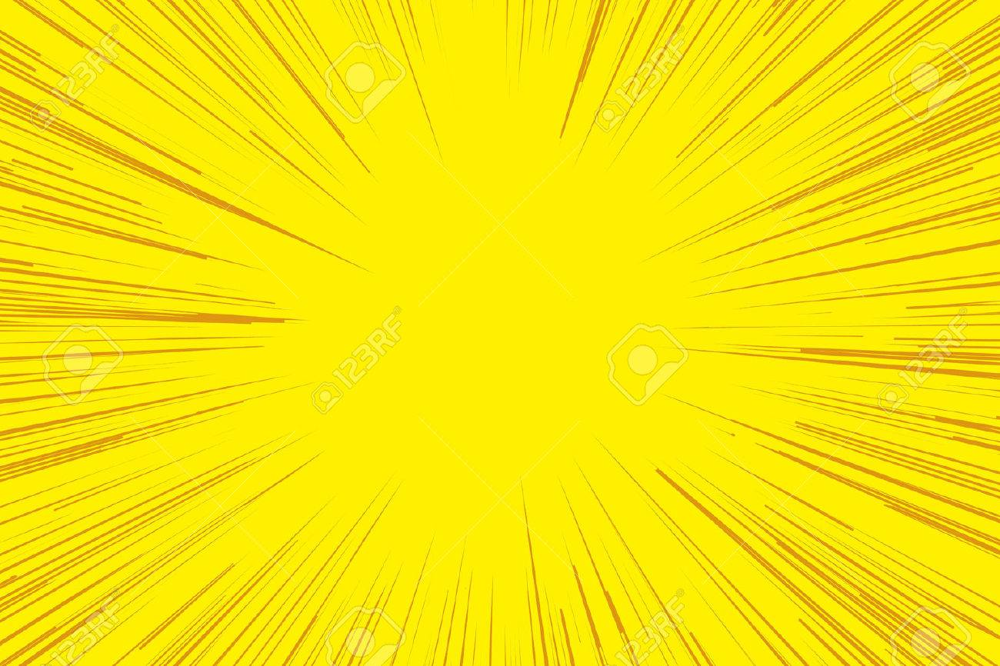
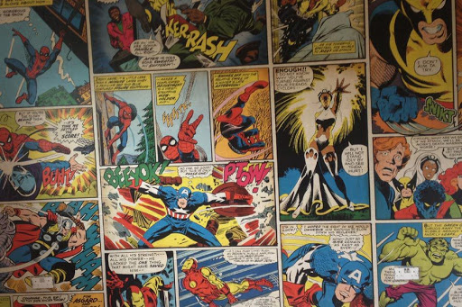

Lee los Comics mas famosos de toda la franquicia Marvel
Sobre Marvel Comics
En 1961, la editorial que habría de ser Marvel Comics destacaba únicamente por sus cómics de monstruos y por el trabajo de dos de sus dibujantes, Jack Kirby y Steve Ditko. Sin embargo, en noviembre de 1961 aparecía Fantastic Four, una serie que bebía de la moda de los superhéroes y que rápidamente se ganó el favor del público gracias al desarrollo de sus personajes, cuya caracterización era mucho más realista que la de otros títulos superheroicos.

Nuestros superhéroes
En el siguiente apartado se encuentran algunos de los super heroes mas famosos de la franquicia de Marvel Comics y mas reconocidos segun las encuestas de popularidad.